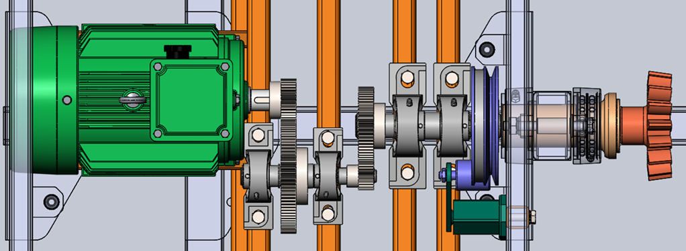

Industrial Cement Mixer
Mechanical Design
Dec 2021 - May 2022 . 5 mo
Designed a mechanical transmission system for an industrial scale cement mixer. Used a 3-step reduction to decrease motor output speed from 1000rpm to 20rpm.
First two stages of the reduction utilised MOD-2 spur gears and final stage was achieved using a V belt and pulley. All shafts, keys and keyways were designed using industry standards and constrained with internal and external circlips.
Complete engineering drawings were produced for all non-standard componments including the shafts and pinion gear housing. A comprehensive presentation of the design was also produced to display to a client.